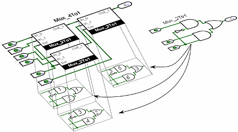

子电路
当您构建越来越复杂的电路时，您将需要构建较小的电路，您可以将其作为嵌套在较大电路中的模块多次使用。 在 Logisim-evolution 中，这种用于较大电路的较小电路称为 子电路 。
如果您熟悉计算机编程，您就会熟悉子程序概念，无论它是称为 子例程 、 函数 、 方法 还是 程序 以您喜欢的语言进行。 子电路概念与此类似，其目的相同：将大工作分解为小块，节省多次定义同一概念的精力，并方便调试。
创建电路
使用子电路
选择子电路的外观
自定义外观
调试子电路
Logisim-evolution 库
动态组件
下一节: 动态组件 .
